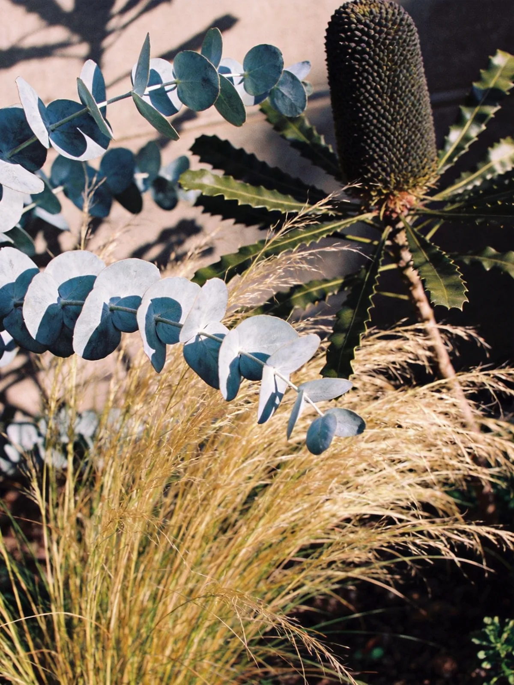
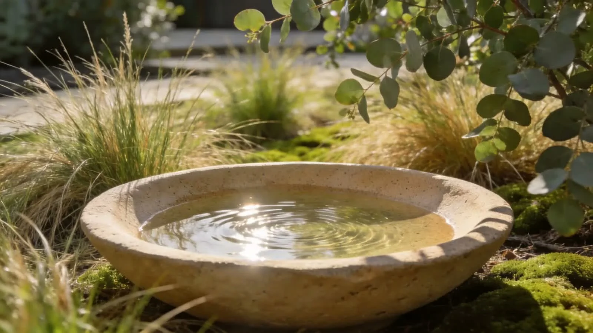

A different way to live outside
Not just a garden.
A place to belong.
Some spaces ask you to slow down. To notice the light. To take the long way to the front door.
Think in layers: a quiet path, a generous canopy, a softness at the edges. A garden can be both considered and a little untamed.
The living palette
Soft edges.
Strong character.
Silver foliage catches the light. Fine grasses bring movement. Stone gives the whole composition somewhere to settle.


Start with the feeling
What does your
outside need?
Calm & privacy
Make room to exhale.
Start with layered planting, a sheltered place to sit and a small sensory detail. Save this garden direction as your design brief.
Connection & shade
Bring everyone outside.
Think about a generous shared table, shade, practical circulation and a planting edge that softens the space.
Courtyard & entry
Small can feel expansive.
Choose one strong focal point, a limited material palette and planting at different heights to create depth.
WILDFORM